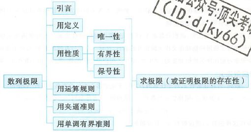

1 预备知识（初高中）
1.1 函数的概念与特性
- 函数（定义域、值域、对应法则）；反函数；复合函数
- 函数：y=f(x)：1个x只能对应1个y
- 反函数：x=f−1(y)
- 严格单调函数必有反函数。：1个y只能对应1个x
- 当写作y=f−1(x)时，图像与其原函数关于y=x对称
- 特性：有界性、单调性、奇偶性、周期性、（对称
- 有界性：∣f(x)∣≤M。：必须指明区间；只要这个区间上任意一点x0使x→x0limf(x)=∞，则无界
- 单调性
- 7个重要结论说明，关于f′(x),∫axf(t)dt和f(x)的关系
1.2 函数的图像
- 直角坐标系
- 基本初等函数（反对幂三指）、初等函数概念；分段函数
- 变换：平移、对称、放缩；（投影、旋转）
- 极坐标系：心形线（外摆线）、阿基米德螺线、玫瑰线、伯努利双扭线
- 参数方程：摆线、星形线（内摆线）
- 很难找到形如f(x,y)=0的解析式，考虑用参数t，分别找到x、y与t的关系联立
- 大量方程（解析式）都是此种形式
1.3 常用基础知识
数列
三角函数
- 常用角度值
- 诱导公式
- 倍角公式
- 半角公式
- 和差公式
- 和差化积/积化和差
- 万能公式
一元二次方程
因式分解
(a−b)3,(a+b)3,a3−b3,a3+b3
阶乘与双阶乘
- n!=1⋅2⋅⋅⋅n
- (2n)!!=2⋅4⋅⋅⋅2n
- (2n−1)!!=1⋅3⋅⋅⋅(2n−1)
常用不等式（共10条，下省）
- 绝对值
- ∣a±b∣≤∣a∣+∣b∣
- ∣∣a∣−∣b∣∣≤∣a−b∣
- 各种均值不等式
- 若0<a<x<b,0<c<y<d，则bc<xy<ad
- 若a>b>0，{n>0,an>bnn<0,an<bn
- sinx≤x≤tanx,x∈(0,2π)
- sinx<x,x>0
- arctanx≤x≤arcsinx,0≤x≤1
- ex≥x+1
- x−1≥lnx,(x>0)
- x+11<ln(1+x1)<x1,(x>0) （拉格朗日证明）
2 数列的极限
极限是一个过程，ϵ是一个“差不多”的思想

- 定义、性质、夹逼准则、单调有界准则：证数列极限问题
2.1 定义
ϵ−N 语言：注意，数列中的∞特指正无穷（n是自然数）
- 用定义法证明极限
- ∣xn−A∣<ϵ
- 反解 xn=g(ϵ)
- N=⌈g(ϵ)⌉
- 数列收敛，任何一个子数列都收敛，且极限相同。
2.2 性质
- 唯一性
- 有界性：极限存在必有界。反之不成立，反例sinxn有界无极限
- 保号性（脱帽）：n→∞limxn=A，若A>0(或A<0)，则n>N时，有xn>0(或xn<0)。（即使A≥0(或A≤0)，仍然有xn>0(或xn<0)，取不到等号。
- 推论（带帽）：若从某项起有xn≥0，且极限存在为A，则A≥0。能取到等号
2.3 四则运算
！只有有限个数列相运算才可以使用四则运算规则
- 对于无限个数列，考虑夹逼准则
- 无穷级数研究无限个数列
2.4 夹逼准则
不验证等号
2.5 单调有界准则 （很重要）
单调有界数列必有极限。（证单调性+有界性。有界性的证明，充满了不等关系）
- 若数列an是单调递增（递减）数列，且有上界（下界），则数列an必有极限
- 单增考虑上界，反之亦然。
- 单减考虑下界，反之亦然。
- 形如an+1=kan类似的数列递推式，考虑使用单调有界准则
Conclusion
此节内容针对数列，侧重于极限的证明。并且充满了不等关系（各种不等关系很重要）
- 定义法证明：没有什么解析式，看起来比较干，就定义法证吧
- 性质证明（用唯一、有界、保号、子数列关系）：更侧重于发散的证明（各种逆否命题的应用）
- 夹逼准则：侧重于“无限个数列”（例如求和一类），无法使用四则运算规则，典型的需要放缩
- 放缩有技巧：naive放缩，尽量只动分母，不动分子；非naive，保证“公比”相同
- 单调有界准则：侧重于递推式的证明
- 单增考虑有上界，反之亦然
- 单减考虑有下界，反之亦然
进一步：
- 证明发散：1定义法；2性质（唯一性、有界性、保号性、与子数列关系）
- 证明收敛：1定义法；2夹逼；3单调有界
- 求值：1定义法；2夹逼；3四则运算；4单调有界证明后，两端直接套lim求解
- 都考虑需要结合四则运算
Quick Hints
- 解不出的方程，没准画个图就解出来了，借助不等式
- 看见n21这种，还有无限个，可以考虑裂项的式子进行放缩（小于、大于均可有）
- 有些数列能求通项，就直接求吧…
- 回顾一些高中数列的递推模式
3 函数的极限
定义：ϵ−σ语言，ϵ−X语言
3.1 计算极限（函数）
| 极限值的形式 |
解法 |
| 00 |
洛必达、泰勒 |
| ∞∞ |
洛必达、泰勒 |
| 0⋅∞ |
除法转以上 |
| 00 |
用对数转以上 |
| ∞0 |
用对数转以上 |
| 1∞ |
用对数转以上 |
| 极限值的形式 |
解 |
| ∞0 |
0 |
| 0∞ |
∞ |
| 0⋅0 （有限个连乘可） |
0 |
| 0⋅c （有限个连乘可） |
0 |
| ∞⋅∞ |
∞ |
| c⋅∞ |
∞ |
| 0∞ |
0 |
| ∞∞ |
∞ |
| 10 |
1 |
| 极限值的形式 |
解 |
| ba |
ba |
| c∞ |
∞ |
| ∞c |
0 |
| c0 |
0 |
| 0c |
∞ |
| 函数 |
展开 |
变形 |
| sinx |
x−3!1x3+o(x3) |
|
| arcsinx |
x+3!1x3+o(x3) |
|
| cosx |
1−2!1x2+4!1x4+o(x4) |
|
| tanx |
x+31x3+o(x3) |
|
| arctanx |
x−31x3+o(x3) |
|
| ln(1+x) |
x−21x2+31x3+o(x3) |
|
| ex |
1+2!1x2+3!1x3+o(x3) |
|
| (1+x)a |
1+ax+2!a(a−1)x2+o(x2) |
|
做题小技巧：如果分子分母阶数都待定，则先定容易的（一般先定分母展开后阶数，分子看齐）
- 四则运算条件：有限个，且函数极限均存在，即均不为∞。除法中，分母不为0.
- 复合函数的极限运算法则：
- 选u=g(x)
- 求x→⋅limg(x)=u0
- 求x→⋅limf(u)
- 所以，遇到et,sint一类的式子，可以直接先求里面，再把值u0代出来
- 变量代换同理
- 几个函数极限计算中的重要函数（要考虑左右极限）
- ex：指数函数
- ∣x∣：绝对值
- arctanx：反三角函数
- [x]：取整
- 连续和间断点问题考虑
自证性定理结论（过程参考笔记）：
- 当求极限的部分为乘除法时，如x→⋅limf(x)⋅g(x)，若有x→⋅limg(x)=C(C=0或∞)，则x→⋅limf(x)⋅g(x)=Cx→⋅limf(x).
- 若n→∞limun=a，则n→∞lim∣un∣=∣a∣
- 若奇、偶子列极限均存在，且都趋于a，则原数列极限存在且为a
附录A：函数积累
1
- 极坐标系下：
- 心形线 r=a(1−cosθ)（左开口）
- 阿基米德螺线 r=aθ
- 玫瑰线 r=asin3θ
- 伯努利双扭线 r2=2a2cos2θ
- 对数螺线 r=aekθ,a>0,k>0
- 参数方程：
- 摆线：
{x=r−sinθy=r−cosθ
- 星形线（内摆线）
{x=rcos3ty=rsin3t
2
- 双曲正弦： shx=2ex−e−x
- 反双曲正弦： ln(x+x2+1)：联想有理化（取负得倒数）
- 导数为 x2+11
- 双曲余弦： chx=2ex+e−x
- 反双曲余弦： ln(x+x2−1)：联想有理化（取负得倒数）
- 导数为 x2−11
- 双曲正切： thx=chxshx=ex+e−xex−e−x
 wechat
wechat alipay
alipay